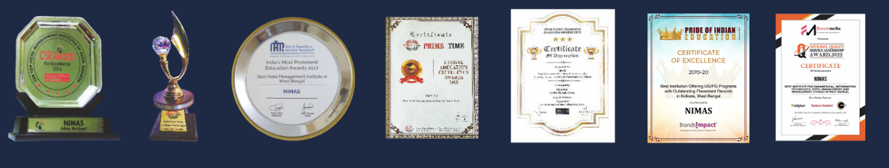

Why NIMAS
- All courses at NIMAS are regular, full-time programs affiliated with MAKAUT (formerly WBUT) and approved by UGC, MHRD, Government of India.
- Experienced and dynamic faculty members who bring subject-matter expertise, industry experience, and innovative teaching methods.
- An enriching student life that fosters lifelong connections, personal growth, and enhanced career readiness.
- Regularly updated curricula designed to keep pace with evolving industry demands and emerging trends.
- Comprehensive study modules offering balanced theoretical foundations and practical skills.
- Dedicated focus on individual potential and skill enhancement to boost confidence and employability.
- Regular guest lectures and interactive sessions with leading corporate professionals and industry experts.
- Personalized attention and individual guidance for every student throughout their academic journey.
- Modern, state-of-the-art laboratories integrated with modern learning technologies.
- A well-stocked campus library offering extensive academic and research resources.
- An active corporate relations and placement cell facilitating industry engagement and career opportunities.
Accreditation, Affiliations & Awards
Best Institute for Paramedical, Information Technology, Hotel Management and Management Studies in West Bengal
- B. Optometry
- B.Sc. in Cyber Security
- B.Sc. in Computer Science
- B.Sc. in Data Science
- M.Sc. in Clinical Psychology
- M.Sc. in Dietetics & Nutrition
- Hotel Management (BHHA)
- Bachelor in Hospital Management
- BCA
- B.Sc. in Medical Lab Technology
- B.Sc. in Medical Instrumentation and Critical Care Technology
- BBA
The University officially commenced operations on January 15, 2001, following the enactment of the West Bengal University of Technology Act, 2000 (West Bengal Act XV of 2000). Academic programs were formally launched on July 16, 2001, under notification from the Department of Higher Education, Government of West Bengal. The institution is recognized under Section 2(f) and Section 12(B) of the UGC Act and is eligible to receive UGC grants. For more details on the university, visit www.wbut.ac.in.
NIMAS offers a proven path toward international career opportunities. Established in 1999, the institute has earned consistent acclaim from recognized educational rating organizations for its commitment to academic quality, innovation, and practical execution.
- Best Institute For Paramedical, Information Technology, Hotel Management And Management Studies In West Bengal
- “Best Institution Offering UG/PG Programs with Outstanding Placement Records in Kolkata, West Bengal” – Pride of Indian Education Awards, BrandImpact 2020.
- “Best Training, Infrastructure and Placement Institute in Eastern India” by India's Most Prominent Education Awards
- “Best Hotel Management Institute in West Bengal” by India’s Most Prominent Education Awards, 2017 in association with News 18 India (IBN7) as media partner
- “Best Hospitality & Hotel Management Training Institute in West Bengal” by International Education Excellence Awards, 2017
- “Best Training, Infrastructure and Placement Institute in Kolkata” by Prime Time Global Education Excellence Awards, 2017
- “Top Hotel Management Institute of India” by CSRAward for Excellence, 2016
- “Best Hospitality and Hotel Management Training Institute in Kolkata” by Prime Time Global Education Excellence Awards, 2016

State of the Art Infrastructure
Located on the tranquil outskirts of Kolkata away from urban noise, our spacious campus features comprehensive student housing, athletic facilities, recreational areas, and dedicated academic venues. Designed to seamlessly link classroom learning with practical industry environments, the campus includes specialized training setups such as a 5-star standard lobby mockup, functional training restaurants, and beverage service suites.
Placement and Internships
Our long-established presence in higher education has fostered strong relationships with leading corporate organizations and hotel chains, facilitating regular campus drives for both internship placements and full-time employment roles.
Numerous premier hospitality organizations consistently recruit our students across consecutive academic terms for key operational and management internship assignments.
Eminent Faculty and Mentors
As an equal opportunity employer, NIMAS attracts exceptional teaching talent from across the country. Our faculty members combine robust academic qualifications with extensive industry experience, continuously updating their credentials to meet regulatory and sector standards to guide every student toward excellence.